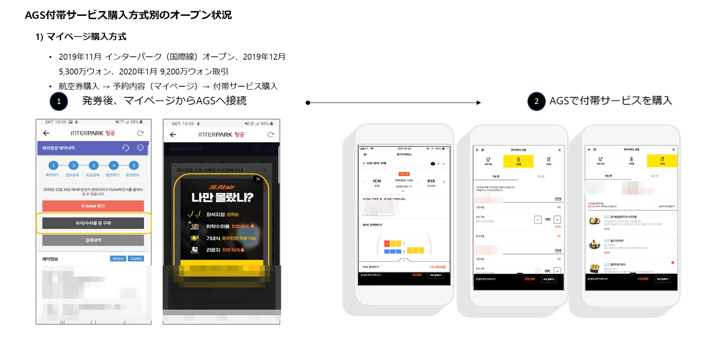
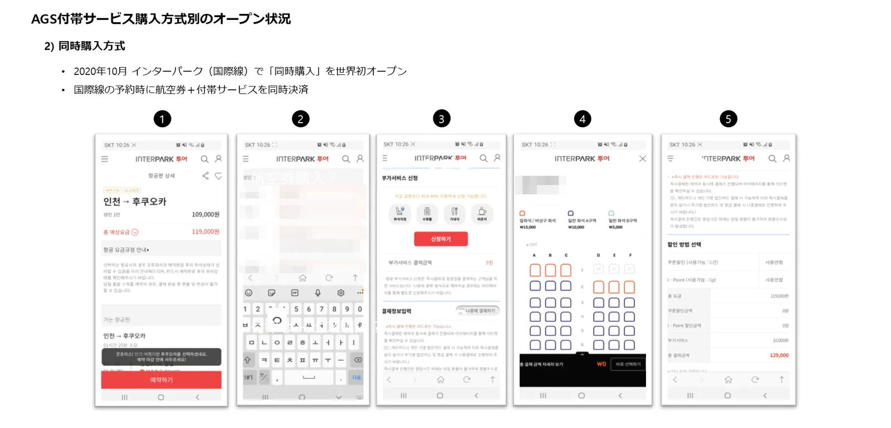
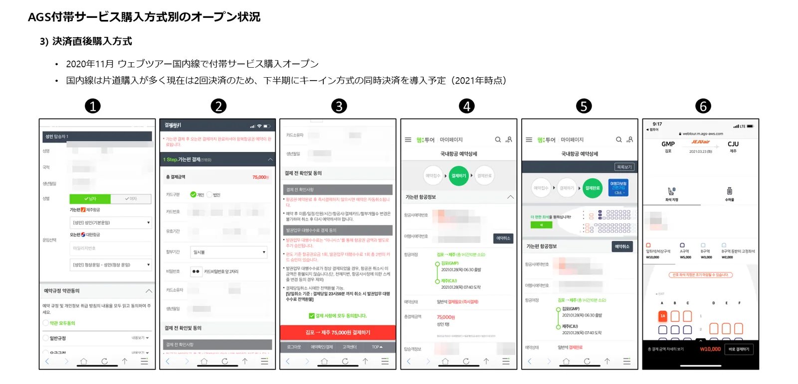

① マイページ購入
航空券の発券後、予約内容（マイページ）の「座席・手荷物の購入」ボタンを押すと、オールウィンエアの付帯サービス画面につながります。2019年11月にインターパーク国際線で初めてオープンし、2019年12月に5,300万ウォン、2020年1月に9,200万ウォンの取引を記録しました。

② 同時購入
航空券を予約する流れの中で座席・手荷物・機内食を一緒に選び、航空券と付帯サービスを一度に決済します。2020年10月にインターパーク国際線でオープンしました。

③ 決済直後購入
航空券の決済が終わった画面で「より快適な座席をご希望ですか？」と提案し、そのまま座席・手荷物の購入へつなげます。2020年11月にウェブツアー国内線でオープンしました。

どれくらい買われるのか：初期の運用実績
56.1%国際線の購入率（購入数 ÷ 訪問者数）
25.2%国内線の購入率
15.6%国際線の決済率（決済件数 ÷ 訪問者数）
1〜2%一般的なECの購入率（比較）
| 区分 | 国際線（2019.11〜2021.04） | 国内線（2020.11〜2021.04） |
|---|---|---|
| 決済率 | 15.6% | 11.3% |
| 購入率（全体） | 56.1% | 25.2% |
| ・座席指定 | 37.4% | 24.8% |
| ・手荷物 | 9.5% | 0.4% |
| ・機内食 | 8.7% | — |
| 決済1件あたりの単価 | 72,214ウォン | 14,259ウォン |
| 決済1件あたりの購入数 | 3.6個 | 2.2個 |
オールウィンエアAGSの初期運用実績（国際線 2019.11〜2021.04、国内線 2020.11〜2021.04）。航空券を買ったばかりの旅行者に必要な商品を提案するため、一般的なECより購入率が大きく上回ります。
よくあるご質問
- 販売先はどの販売方式を選ぶべきですか？
- 3つを併用できます。予約中の同時購入で最初の購入をつくり、決済直後の提案とマイページ購入で取りこぼした旅行者をフォローする方法をおすすめします。
- 付帯サービスの購入率はどのくらいですか？
- 初期の運用実績では、国際線の購入率（購入数 ÷ 訪問者数）が56.1%、国内線が25.2%でした。一般的なECの1〜2%を大きく上回ります。
- 国内線と国際線の両方に対応していますか？
- はい。国際線・国内線の両方に対応しており、提供される商品は航空会社や路線によって異なります。
オールウィンエアとの連携を始めましょう
航空会社・付帯サービス提供事業者も、旅行会社・OTA・旅行プラットフォームも、ひとつの連携から始められます。連携方式とスケジュールは提携先の環境に合わせてご相談します。日本語・英語でのお問い合わせも可能です。
提携窓口メール（海外からはメールを推奨）partnership@allwin.co.kr
代表電話（韓国国内・平日 09:00〜18:00 KST）+82 1522-2284